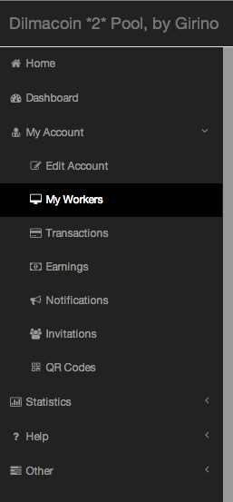
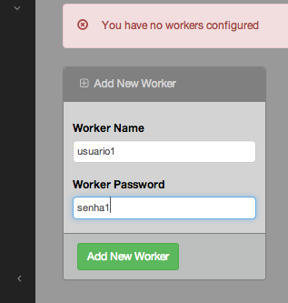
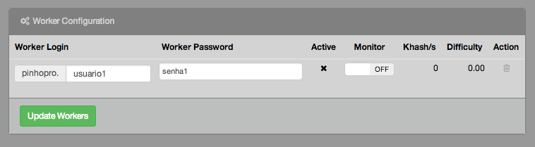

GANHE DILMACOIN
COMO MINERAR A DILMACOIN?
Atualmente existem apenas 2 programas de computador que são utilizados para resolver os blocos da DilmaCoin (também conhecido como minerar DilmaCoin).
Um para ser usado com a CPU (processador central) do seu computador, chamado cpuminer, que é mais lenta, porém muito mais fáci de se usar.
O segundo é para ser usado com a GPU (placa de vídeo) do seu computador, chamado sgminer, que é muito mais rápida, porém, este programa requer que você possua uma placa de vídeo compátivel e moderna. Não existe uma lista das placas de vídeo que funcionam, você precisa baixar o programa e testar. Na verdade, se você não tiver uma placa de vídeo de gamer, potente, provavelmente este programa não irá funcionar.
Em ambos os programas, você poderá rodar eles de forma individual em seu própio computador (mineração sozinha, ou solo mining), ou poderá se juntar com outras pessoas que também estão rodando este mesmo programa de computador para minerarem juntos e dividirem os lucros da mineração (mineração em conjunto).
A mineração em conjunto é muito mais eficiente, principalmente porque quanto mais pessoas houverem minerando, mais dificil irá ficar. A realidade é que realizar a mineração individual só é possível nos primeiros dias do lançamento de uma criptomoeda e justamente por isso nós não iremos abordar a mineração individual neste manual.
Mineração em conjunto ou Mining pool
No Brasil, existem 2 grandes websites que agrupam os mineradores de DilmaCoin em conjunto para que todos eles minerem juntos.
- São estes:
- Girino
- p2poolbrasil
Em troca de seus serviços, ambos os sites cobram uma taxa que incide sobre as moedas mineradas, geralmente cerca de 2%. Em contrapartida, você estará sempre recebendo as moedas de forma mais constante e justa.
Logo a seguir, você poderá baixar os programas de mineração, bem como configurar eles para minerar em conjunto.
Programa 1: cpuminer
Este é o minerador para CPU, mais simples e que funciona em praticamente todos os computadores, desde o computador do milhão até os computadores mais modernos.
Use os links a seguir para baixar o programa em seu computador.
Download para Windows:
Código fonte:
2º programa: sgminer
Este é o minerador para GPU, que utiliza a sua placa de vídeo. Normalmente as placas de videos modernas são capazes de fazer milhares de cálculos matemáticos ao mesmo tempo, fazendo com que uma GPU consiga ter o mesmo poder de mineração que vários computadores usando somente as CPUs. Porém, isso só é possível com placas de videos bem específicas. O programa a seguir poderá não funcionar com a sua placa de vídeo.
Use os links a seguir para baixar o programa em seu computador.
Download para Windows:
Código fonte:
Configurando o minerador para o “pool do girino”
1. Crie uma conta no http://dilmacoin.girino.org/dilma2/public/index.php
2. Se connecte com a sua conta
3. Crie um worker para você
 4. Depois de criar o seu worker, você irá ver ele na lista de workers
5. Extraia o arquivo do minerador baixado no seu computador e salve ele em seu desktop
6. No seu desktop, crie um arquivo chamado girino.bat
7. Abra o arquivo girino.bat no seu bloco notas
Se você está usando minerd ( mineração pela CPU ), o seu arquivo deverá ser este:
minerd.exe -o stratum+tcp://dilmacoin.girino.org:3032/ -u [usuario.worker] -p [senha] -a X11 -t 1
Se você está usando sgminer ( mineração pela GPU ), o seu arquivo deverá ser este:
sgminer.exe -k darkcoin -o stratum+tcp://dilmacoin.girino.org:3032 -u [usuario.worker] -p [senha] -I 13 -g 4 -w 512 --auto-gpu GPU_MAX_ALLOC_PERCENT=100
lembre-se de susbstituir o [usuario.worker] e [senha] pelo o worker que você criou no passo 4
8. Salve o arquivo e exeucte ele em seu computador.
Configurando o minerador para a p2poolbrasil
- Crie uma conta no http://p2poolbrasil.org/
- Extraia o arquivo baixado no seu desktop
- No seu desktop, crie um arquivo chamado p2pool.bat
- Abra o arquivo p2pool.bat no seu bloco notas
- [Para completar]